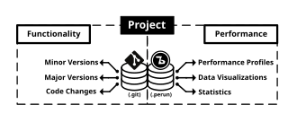
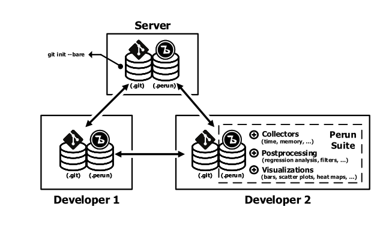
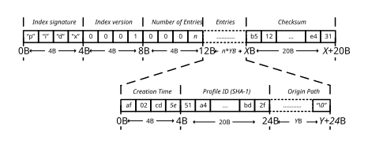
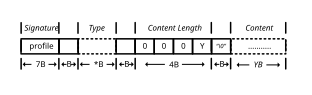
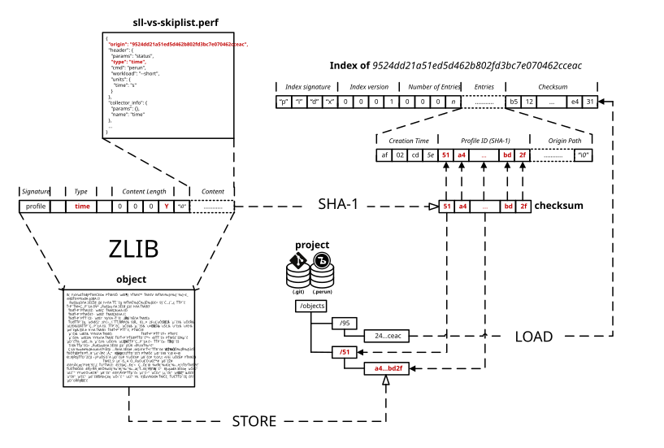

Perun Internals¶
Conceptually one Perun instances serves as a wrapper around the existing version control system
(e.g. some repository). Perun takes specializes on storing the performance profiles and manages the
link between minor versions and their corresponding profiles. Currently as a target vcs we support
only git, with a custom lightweigth vcs being in development (called tagit). The
architecture of Perun contains an interface that can be used to register support for new version
control system as described in Creating Support for Custom VCS. Internal structure of one instance of
Perun is inspired by git: performance profiles are similarly stored as objects compressed by zlib
method and identified by hashes. Perun Storage describes the internal model of Perun more
briefly.
{kind=link}

The diagram above highlights the responsibilities and storage of individual systems. Version control systems manage the functionality of the project—its versions and precise code changes—but lack proper support for managing performance. On the other hand, performance versioning systems manages the performance of project—its individual performance profiles, data visualizations of various statistics—but lack the precise functionality changes. This means that vcs stores the actual code chungs and version references and pvs stores the actual profiling data.
{kind=link}

This diagram shows one of the proper usages of Perun’s tool suite. Each developer keeps his own instance of both versioning and performance systems. In this mode one can share both the code changes and performance measurement through the wider range of developers.
Version Control Systems¶
Version Control System manages the history of functionality of one project, i.e. stores the changes between different versions (or snapshots) of project. Each code change usually requires corresponding the performance profiles in order to detect potential performance degradation early in the development. The following subsection Version Control System API describes the layer which serves as an interface in Perun which supplies the necessary information between the version control and performance versioning systems.
Version Control System API¶
Creating Support for Custom VCS¶
You can register support for your own version control system as follows:
Create a new module in
perun/vcsdirectory implementing functions from Version Control System API.Finally register your newly created vcs wrapper in function
get_supported_module_nameslocated inperun.utils.common.cli_kit:1--- /home/runner/work/perun/perun/docs/_static/templates/supported_module_names.py 2+++ /home/runner/work/perun/perun/docs/_static/templates/supported_module_names_collectors.py 3@@ -4,7 +4,7 @@ 4 error(f"trying to call get_supported_module_names with incorrect package '{package}'") 5 return { 6 "vcs": ["git", "svs"], 7- "collect": ["trace", "memory", "time"], 8+ "collect": ["trace", "memory", "time", "mycollector"], 9 "postprocess": [ 10 "moving-average", 11 "kernel-regression",
Optionally implement batch of automatic test cases using (preferably based on pytest) in
testsdirectory. Verify that registering did not break anything in the Perun, your wrapper is correct and optionally reinstall Perun:make test make installIf you think your wrapper could help others, please, consider making Pull Request.
Perun Storage¶
The current internal representation of Perun storage is based on git internals and is meant for
easy distribution, flexibility and easier managing. The possible extension of Perun to different
versions of storages is currently under consideration. Internal objects and files for one local
instance of Perun are stored in the filesystem in the .perun directory consisting of the
following infrastructure:
.perun/
|-- /jobs
|-- /logs
|-- /objects
|-- local.yml
.perun/jobs:Contains pending jobs, i.e. those that were generated by collectors, postprocessed by some postprocessors, or automatically generated by
perun runcommands, but are not yet assigned to concrete minor versions. These profiles contains the tagoriginthat maps the profile to concrete minor version, i.e. the parent of the profile. This key serves as a prevention of assigning profiles to incorrect minor versions..perun/jobs |-- /baseline.perf |-- /sll-comparison.perf |-- /skip-lists-medium-height.perf |-- /skip-lists-unlimited-height.perf
.perun/objects:Corresponds to main storage of Perun and contains object primitives. Every object of Perun is represented by unique identifier (mostly by sha representation) and corresponds either to an object blob (containing compressed profile) or to an index of a corresponding minor version, which lists assigned profiles for the given minor version.
.perun/objects |-- /07 |-- f2b4bfa06f6b1be5713f2bbae7740838456758 |-- 99dc4c5891947bdf7e26341231ca533432a1f1 |-- /3d |-- 3859b46db4eea5866a0b2b28997fac25a95430 |-- /ff |-- d35c8962d8d2019d7762a7bc6980c1d0f2fcd7 |-- d88aabca6e5427c78ea647e955ffa00d1cd615
Each object from
.perun/objectsis represented by hash value, where the first two characters are used to specify directory and the rest of the hash value a file name, where the index or compressed file is stored..perun/logs:Contains various logs for various phases. Currently this holds logs for each minor version, for which we precollected new profiles during the
perun checkcommand. This behaviour can be set up by settingdegradation.log_collectto true.local.yml:Contains local configuration, e.g. the specification of wrapped repository, job matrixes or formatting strings corresponding to concrete VCS. See Perun Configuration files for more information about configuration of Perun.
Perun Index Specification¶
Each minor version of vcs, which has any profile assigned, has corresponding index file in the
.perun/object according to its identification. The index file itself is stored in binary format
with the following specification.
{kind=link}

- Index signature [4B]:
Signature are the first bytes of the index containing ascii string pidx, which serves as an quick identification of minor version index.
- Index version [4B]:
Specification of version of conding of the index. Versioning is introduced for potential future backward compatibility with possible different specifications of index.
- Number of Entries [4B]:
Integer count of the number of entries found in the index. Each entry of the index is of variable length and lists the profiles with mapping to their corresponding objects.
- Entries [variable length]:
One entry of the index corresponds to one assigned profile. Each entry is of variable lenght and contains the identification of the original profile file, together with timestamp of creation and the identification of the compressed object, that contains the actual profiling data. Each entry can be broken into following parts:
Creation time [4B]: creation time of the profile represented as 4B timestamp.
Profile ID [20B]: unique identification of the profile, i.e. specification of the concrete compressed object located in the
.perun/objects. Profile ID is always in form of SHA-1 hash, which is obtained from the contents.Origin Path [variable length: Original path to the profile represented as ascii string of variable length terminated by null byte.
- Checksum [20B]:
Checksum of the whole index, which serves for error detection.
Perun Object Specification¶
Each non-index object consist of short header ended with zero byte, consisting of header signature
string, type of the profile and lenght of the content, and raw content of the performance profile
w.r.t. Specification of Profile Format. First we compute the checksum for these data, which serves as an
identification in the minor version indexes and in .perun/objects directory. Finally, the
object is compressed using zlib method and stored in the .perun/objects compressed.
{kind=link}

- Signature [7B]:
Signature is a 7B prefix containing ascii string “profile”. Serves for quick identification of profile.
- Type [variable length]:
Ascii specification of the profile type. This serves for quick and easy parsing of profiles.
- Content Lenght [4B]:
Integer count of the non-header data followed after the zero byte in bytes.
- Content [variable length]:
Contents of the performance profile w.r.t. Specification of Profile Format.
The Lifetime of profile: Internals¶
The following subsections describes in more detail the basics of profile manipulations, namely registering, removing and lookuping up profiles.
Registering new profile¶
Given a profile, w.r.t. Specification of Profile Format, called sll-vs-skiplist.perf, registering this
profile in HEAD minor version index, the following steps are executed:
sll-vs-skiplist.perfis loaded and parsed into JSON. Profile is verified whether it is in format specified by Specification of Profile Format.
originkey is compared with the massagedHEADminor version. In case it differes, an error is raised and adding the profiles is canceled, as we are trying to register performance profile corresponding to other point of history. Otherwise theoriginis removed from the profile and will not be stored in persistent storage.We construct the header for the profile consisting of
profileprefix, the type of the specified by type and length of the unpacked JSON representation of profile, joined by spaces and ended by null byte.JSON contents of performance profile are appended to the header resulting into one
object.An SHA-1 hash
checksumis computed out of theobject. The hash serves both as a check that the profile was not damaged during next usage, as well as identification in the filesystem.The
objectis compressed using zlib compression method and stored in the.perun/objectsdirectory. First two characters ofchecksumspecifies the target directory and the rest specifies the resulting filename.An index corresponding to the
HEADminor version is opened (if it does not exist, it is newly created first). Minor version index is also represented by its hash, where first two characters of hash is used as directory and the rest as filename.An entry for
sll-vs-skiplist.perfwith given modification time is registered within the index pointing to thechecksumobject with compressed data. The number of registered profiles in index is increased.Unless it is specified otherwise, the
sll-vs-skiplist.perfis removed from filesystem.
{kind=link}

Removing profile from index¶
Given a profile filename sll-vs-skiplist.perf, removing it from the HEAD minor version
index, requires the following steps to be executed:
An index corresponding to the
HEADminor version is opened. Minor version index is represented by its hash, where first two characters of hash is used as directory and the rest as filename. If the index does not exist, removing ends with an error.An entry for
sll-vs-skiplist.perfis looked up within within the index. If it is not found, the removing ends with an error. Other wise, the entry is removed from the index and the number of registered profiles in index is decreased.The original compresed object, which was stored in the entry is kept in the
.perun/objectsdirectory.
Looking up profile¶
Profiles are looked-up during the perun show, perun add, perun postprocessby or perun
rm and can be found in several places, namely the filesystem, pending storage or registered in
index. Priorities during the lookup are usually as follows:
If the specification of profile is in form of
i@iori@p(i.e. the index and pending tags respectively), thenith profile registered in index or stored in pending jobs directory (.perun/jobs) is used.Index of corresponding minor version is searched.
Absolute path in filesystem is checked.
.perun/jobsdirectory is searched for match, i.e. one can specify just partial name of the profile during the lookup.Otherwise the whole scope of filesystem is walked. Each successful match asks user for confirmation until the profile is found.
Refer to Command Line Interface for precise specification of lookups during individual commands.